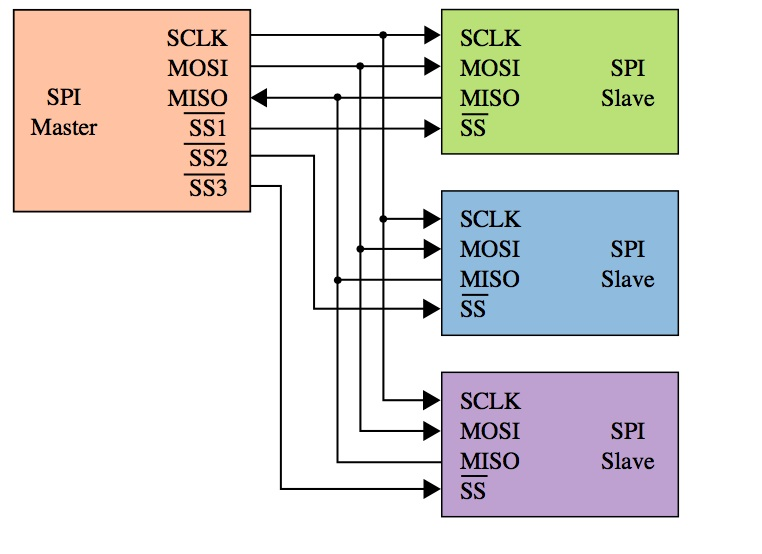
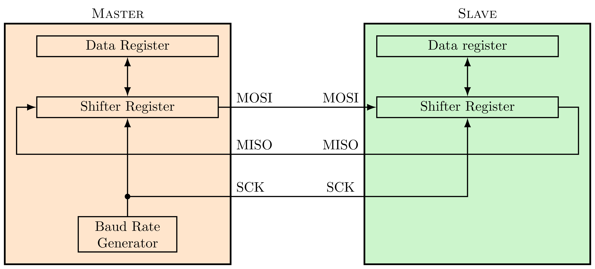
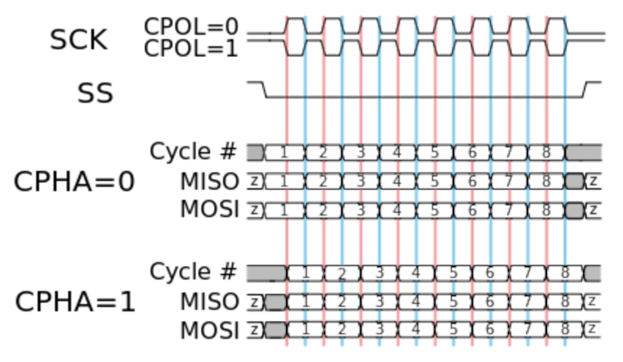
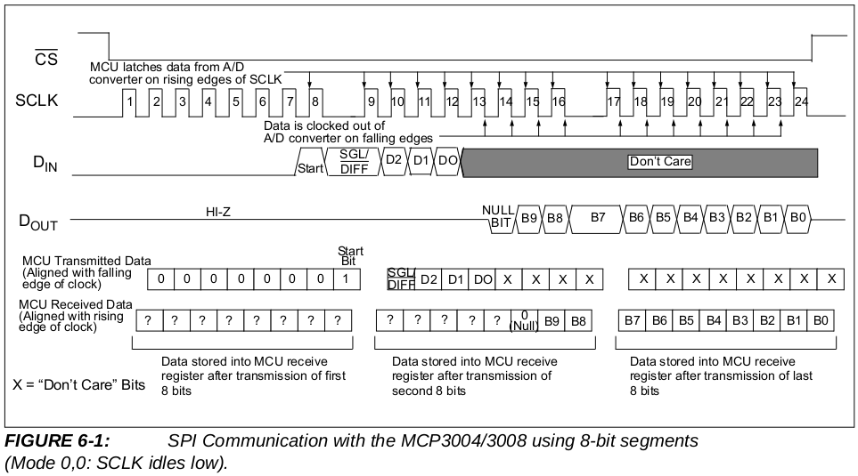

Control de dispositivos SPI¶
En esta práctica vamos a ver cómo podemos manejar dispositivos conectados al controlador spi utilizando el driver spi de Linux. Comenzaremos recordando brevemente el funcionamiento del bus spi, ya que es necesario entenrlo para manejar el driver y los dispositivos. Al final probaremos lo que hemos aprendido utilizando el ADC incluido en la placa BEE.
Bus SPI¶
El Serial Peripheral Interface (SPI) es un bus serie síncrono y bidirccional muy utilizado en sistemas empotrados para conectar un microcontrolador a sus periféricos. Puede trabajar con frecuencias de 1 a 20 MHz, pero sólo un dispositivo puede ser máster del bus. El bus utiliza 4 líneas más una tierra común:
- Master out/Slave in (MOSI, SDI)
- Master in/Slave out (MISO, SDO)
- Serial clock (SCK)
- Slave Select (nSS): activo a baja
Los dispositivos SPI pueden funcionar en dos modos
- Master: es el que puede iniciar y controlar una transferencia
- Slave: es el que se comunica con un master que le active
El máster selecciona al slave con el que quiere comunicarse activando su señal SS (poniéndola a 0). Si un dispositivo puede hacer de máster o slave, puede configurar el pin nSS como entrada para ver si otro módulo está actuando como master. Si se detecta otro máster el dispositivo debe configurarse en modo slave.

En SPI el envío y la recepción suceden simultáneamente, el bus funciona como un registro de desplazamiento circular distribuido. Se suele utilizar un sistema de doble buffer. El master y el slave tienen un registro de datos de 8 bits utilizado por el software para escribir el dato a transmitir o leer el dato recibido. También disponen de un registro de desplazamiento de 8 bits.
El procediminto de transmisión se ilustra en la figura de abajo. Pongamos por ejemplo que el master quiere envíar un byte a un esclavo. Para transmitir se empieza copiando el dato en el registro de datos, que después se copia en el registro de desplazamiento. Luego, en cada pulso de la señal SCK (generada por el máster) se desplaza una posición el contenido de éste registro, enviando así por la línea MOSI un bit. El esclavo hace el mismo desplazamiento, enviando a su vez un bit al master por la linea MISO. Ambos dispositivos usan el bit recibido como bit de relleno de su registro de desplazamiento. Este procedimiento continúa hasta que se hayan transmitido los 8 bits. Es configurable si se rellena por el bit más significativo (MSB) o menos significativo (LSB).

SPI tiene esencialmente dos modos de transmisión, ilustrados en la figura de abajo, que son:
-
CPHA = 0:
- El slave puede poner el primer bit en MISO en cuanto es seleccionado
- Los bits son latcheados/capturados en flancos impares de SCK
- El shifter se desplaza en flancos pares de SCK, rellenando con el bit capturado y transmitiendo así un nuevo bit
-
CPHA = 1:
- El slave necesita un flanco en SCK para poner el primer bit en MISO
- Los bits son latcheados/capturados en flancos pares de SCK
- El shifter se desplaza en flancos impares de SCK, rellenando con el bit capturado y transmitiendo así un nuevo bit
Estos dos modos tienen a su vez dos variantes que determinan la polaridad de SCK: - CPOL = 0: SCK activo a alta, inactivo a baja - CPOL = 1: SCK activo a baja, inactivo a alta

Driver SPI en Linux¶
Linux proporciona un driver spi genérico, que expone controladores como dispositivos de caracteres (/dev/spidev#.#). Para realizar una transmisión, lo primero es abrir el fichero de dispositivo. Después usaremos una serie de operaciones ioctl para configurar el modo de transmisión requerido por el dispositivo:
- SPI_IOC_RD_MODE, SPI_IOC_WR_MODE: recibe un puntero a byte para leer o escribir el modo de transmisión básico. Los valores válidos son: SPI_MODE_{0,1,2,3}
- SPI_IOC_RD_LSB_FIRST, SPI_IOC_WR_LSB_FIRST: recibe un puntero a byte para leer o escribir el bit order. Un valor 0 es MSB first y cualquier otro valor es LSB first.
- SPI_IOC_RD_BITS_PER_WORD, SPI_IOC_WR_BITS_PER_WORD: recibe un puntero a byte, para leer o escribir el número de bits en cada palabra spi transferida. Un valor 0 significa 8 bits.
- PI_IOC_RD_MAX_SPEED_HZ, SPI_IOC_WR_MAX_SPEED_HZ: recibe un puntero a uint32 para leer o escribir la frecuencia de transmisión.
Una vez configurado el modo de transmisión, usaremos una operación
SPI_IOC_MESSAGE(n) para realizar envío y recepción simultáneos. Esta operación
recibe un puntero a un array de n elementos del tipo struct
spi_ioc_transfer:
struct spi_ioc_transfer {
__u64 tx_buf; // dirección del buffer para transmision
__u64 rx_buf; // dirección del buffer para recepción
__u32 len; // longitud de tx_buf y rx_buf
__u32 speed_hz;// velocidad para esta transferencia
__u16 delay_usecs; // retardo para subir nCS
__u8 bits_per_word; // bits por palabra
__u8 cs_change; // subir nCS entre medias
__u8 tx_nbits; // num de bits a transmitir
__u8 rx_nbits; // num de bits a recibir
__u8 word_delay_usecs; // retardo entre palabras
__u8 pad;
};
Ejemplos: MCP3008 y DAC MCP4911¶
El MCP3008 es un ADC de 10 bits y 8 canales, que pueden ser utilizados en modo diferencial o en modo independiente. Este ADC tiene un interfaz SPI. La placa BEE tiene montado uno de estos ADCs, que podemos conectar a la Raspberry Pi a través de los jumpers en la tira de pines J2. La siguiente figura muestra un cronograma de una comunicación SPI entre un microcontrolador y el ADC, extraída de la hoja de características del MCP3008 (datasheet) proporcionada por el fabricante:

El siguiente código es un ejemplo de cómo leer el ADC utilizando el driver SPI explicado arriba, siguiendo las directrices del cronograma:
#define MCP3008_START 0x1
#define MCP3008_SIGL_DIFF (0x1 << 7)
__u8 spi_mode = (__u8) SPI_MODE_0;
int channel = 0;
struct spi_ioc_transfer xfer[1];
unsigned char buf[3];
int adcval;
fd = open("/dev/spidev0.0", O_RDWR);
ioctl(fd, SPI_IOC_WR_MODE, &spi_mode);
memset(xfer, 0, sizeof xfer);
memset(buf, 0, sizeof buf);
buf[0] = MCP3008_START;
buf[1] = MCP3008_SIGL_DIFF | ((channel & 0x7) << 4);
xfer[0].tx_buf = (__u64) buf;
xfer[0].rx_buf = (__u64) buf;
xfer[0].len = sizeof buf;
xfer[0].speed_hz = 1350000; //1.35 MHz
ioctl(fd, SPI_IOC_MESSAGE(1), xfer);
adcval = ((buf[1] & 0x3) << 8) | buf[2];
El programa adc_read.c lee una vez por segundo el valor de uno de los canales del adc de la placa BEE y muestra la tensión correspondiente a la medida por la salida estándar. Para usarlo podemos ejecutar el programa con los siguientes parámetros:
- /dev/spidev0.0: es el controlador spi a usar - 0: el canal del adc que leer - 3300: la tensión vdd que alimenta al ADC en mV.El programa dac_follow_adc.c es similar al anterior, pero además copia en el dac el valor leído del adc, de modo que la salida del dac va siguiendo la entrada del adc.
Para comprobar el funcionamiento de estos programas deben conectarse una serie de jumpers en la BEE:
- Jumpers en la tira de pines J2
- Jumpers para selección de VDD y VCC en J14 y J18 (escoger 3.3V)
- Jumper de tensión de referencia del ADC en J11.
- Jumper de tensión de referencia del DAC (no numerado).
- Jumper J9 de nLDAC.